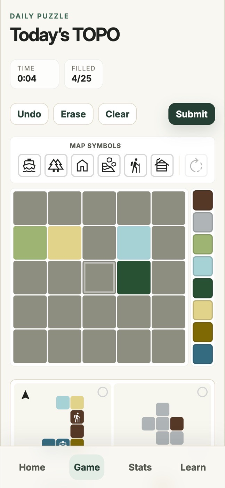
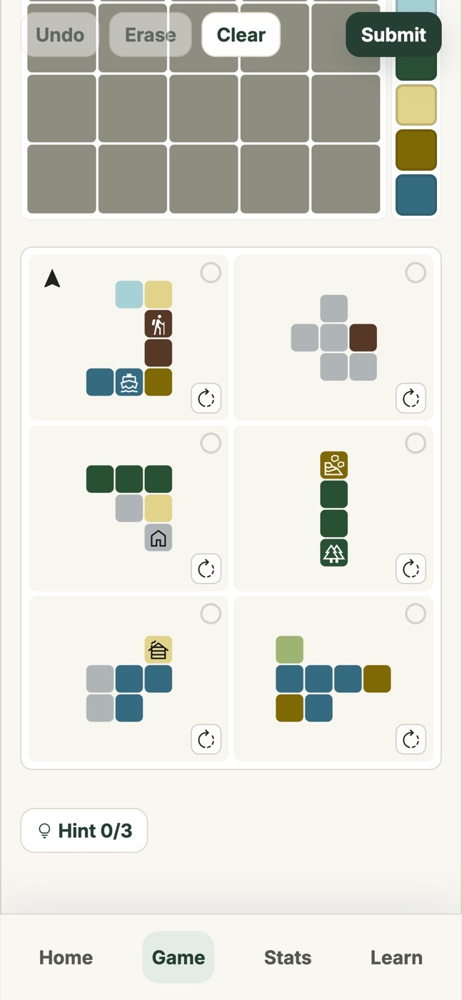
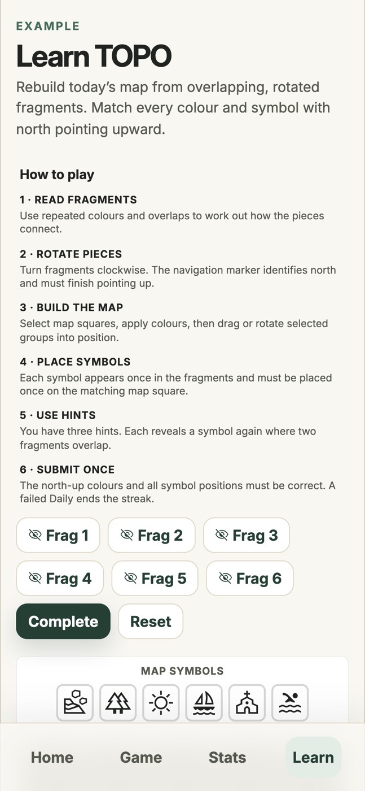

TOPO
A daily map puzzle: rebuild a 5×5 map from overlapping, rotated fragments.

- Type
- Daily puzzle game
- Built with
- React, Vite
- Status
- Live on GitHub Pages
- Checks
- 8 automated tests passing
The idea
Why I built it
After Wordle, I loved the wave of new daily puzzles that followed and wanted to challenge myself to make a game in that space. I liked the idea of building a map, and the question was how to fit it into a daily puzzle of two to ten minutes.
The answer is a spatial puzzle: you are given scraps of a map, each one overlapping its neighbours, and you have to work out the whole picture. It is for anyone who loves a daily puzzle, especially jigsaw-type games. The fun comes from comparing fragments, spotting where they overlap, and committing to a solution.
How it works
The experience, step by step
- CompareStudy the overlapping fragments and work out where each one sits on the 5×5 map.
- PlacePaint the map in the right colours, using the palette.
- RotateFragments start turned. Rotate them, and rotate selected groups of tiles.
- MarkPlace six map symbols, then use the north marker to orient the finished map.
- CheckSubmit. A correct map needs the right colours, symbols and orientation.
In use
Screenshots



Breakdown
What's inside
Same puzzle for everyone, no server
A seeded random number generator turns the date into a puzzle. Because the seed is the same, every player gets the same Daily puzzle without a backend.
Rulesets behind one switch
Two rule profiles live in gameplayRules.js: the original colour-only game and the icons-and-rotation version. One constant decides which is the Daily.
Palette and symbols
Five colour families at four levels make 20 palette groups. Each group has two fixed map icons, so 40 icons in all, and a test checks the catalogue.
Puzzle health checks
A helper analyses colour distinctness and how well the fragments overlap and cover the map, to judge how well a puzzle is put together.
Local-first play and stats
Progress, streaks, hint use and results are stored in the browser. Duplicate results cannot be counted twice.
Production vs testing
Random puzzles, autofill tools and developer routes are off in production builds unless switched on deliberately. A GitHub Action builds and deploys to Pages.
Insights
What I learned and decided
I kept the old ruleset instead of deleting it
When I moved to icons and rotation, the original game stayed in the code. Flipping a single setting brings it back, which makes comparison and regression checks easy and leaves room for a classic mode.
New mechanics were trialled away from the Daily
The symbol plan says the first version was limited to Random and Test puzzles, and Daily puzzles, results and stats stayed unchanged until the idea was tested and approved. Players are never the guinea pigs.
Hints give a clue, never the answer
A hint reveals the same symbol on another fragment that overlaps it. It does not show where the symbol finally goes, and the puzzle stays solvable without hints.
Changes must not break existing players
Hint counts were added as new fields that default to zero, so streaks and totals from before the update survive.
I designed the game and its flow myself and built it with Codex. Codex mainly handled the functionality and puzzle generation, and I went through the full flow and tested generated puzzles to make sure it held up.
The hard part
Getting it all on one page
The hardest part was fitting the game on a single page. An early version put the fragments on a separate page, but going back and forth to the map was clumsy and it did not work well. The fix was to keep the fragments and the map on one screen, so you can copy squares across. Making the fragments draggable and tickable, so you can cross them off as you use them, is what made it work.
Map generation was the other struggle. Early on, fragments overlapped in ways that made puzzles unfair. Colour was a third: I wanted the map to look like a topographic map, a raster mosaic stitched together from fragments, rather than a set of arbitrary colours.
Most of the bugs were UX problems rather than logic problems, caused by squeezing a lot onto a small screen.
Checking it
How I tested it
Beyond the unit tests, I generated and played a lot of maps to check that each puzzle has a good overlap between fragments and that the fragment shapes and overlaps are not all the same. I ran the suite while writing this page: 8 tests passed. They cover streaks (consecutive wins extend, a loss resets the current streak but not the best, a missed day starts a new one), the same result never counting twice, hint use persisting in totals, deterministic fragment rotations, and the 40-icon catalogue.
What I left out, and what's next
I kept it to one daily puzzle with no accounts, so it stays fun and local. Users can come later, once more people seem to enjoy it and I have made the experience as good as the small-screen space allows.
- Keep refining the UX within the space limits of one page.
- Add users and a database, and more game styles, since the game keeps evolving.
- Rotation on fragments was added recently to make the puzzle harder. I need to see whether to revert to the version without rotation and offer rotation as a hard mode.
- The Daily puzzle is generated from the date, but the map data it draws on currently lives in the project; add a clear way to author and health-check upcoming puzzles.